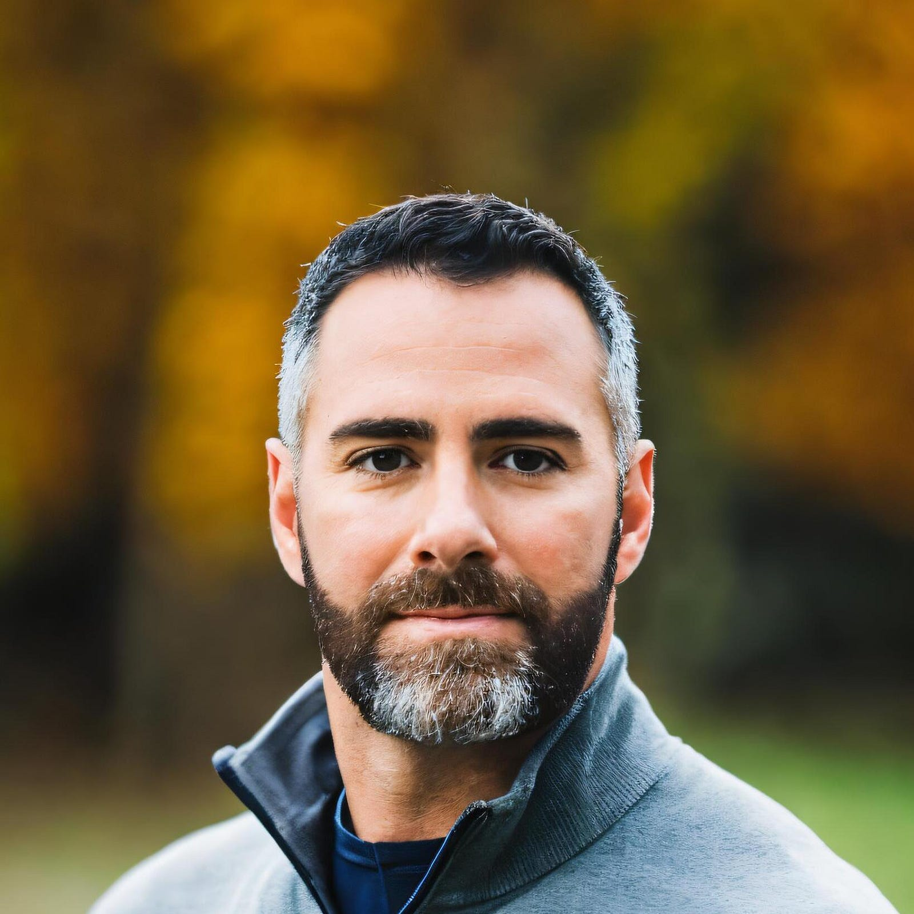

We recently spoke with Jonathan Mostowski, a founding architect of the Digital IT Acquisition Professional (DITAP) program and author of Leading Agile Acquisitions, to reflect on the program’s evolution and its growing impact on federal procurement.
Jonathan shared how DITAP has matured from a foundational training initiative into a force for cultural change — equipping contracting professionals with the mindset, skills, and confidence to lead in complex digital environments. He discussed the importance of systems thinking, ethical tech use, and AI fluency in modern acquisition, and emphasized the power of a strong alumni network to drive meaningful change across government.
Read on to hear Jonathan’s perspective on what the next generation of procurement professionals needs to succeed — and how DITAP is preparing them to meet the moment.

How has DITAP evolved over the years, and what impact have you seen on federal procurement professionals who have completed the program?
When we created DITAP, our aim was to give contracting professionals the mindset and tools to operate effectively in a digital environment. The hope was that they would have a foundational understanding of modern technology such that they could serve as business advisors to requirement owners, CIOs, and CTOs, without requiring simplified explanations. To truly advise, they need to understand the tech principles and the principles that have demonstrated success in acquiring them.
Through the experience of the facilitators, the program has naturally grown to reflect the broader evolution of government technology efforts. The curriculum now incorporates more applied examples, modular acquisition strategies, and cross-functional collaboration techniques. These changes align with the Three Principles of Innovation I describe in my book: belief in the possibility of change, deep understanding of rules and regulations, and responsible risk-taking. DITAP builds capacity in each of these areas, giving professionals the grounding they need to operate confidently and creatively in complex acquisition environments.
The professionals who have completed the program have become trusted leaders in their agencies. Many are advancing modernization initiatives, improving vendor relationships, and mentoring the next generation of acquisition professionals. DITAP alumni are building a network of practitioners who approach procurement with a service mindset and a willingness to challenge outdated norms.
CivicActions is integrating new approaches into the DITAP curriculum through its refresh efforts. What specific updates or enhancements do you think will have the biggest impact on the next generation of digital acquisition professionals?
The refresh brings necessary updates to the curriculum. Greater emphasis on systems thinking, practical application of product management principles, and risk management in iterative environments will strengthen learners’ ability to deliver value in complex settings. Adding content that addresses ethical technology use and modular design strategies will give learners a broader context for the decisions they make. The integration of more experiential learning will ensure participants leave the program ready to apply these concepts in their day-to-day work. These changes reinforce the cultural evolution I write about, moving from compliance-driven mindsets to those focused on service and adaptability.
How should DITAP evolve to meet the needs of AI-era procurement?
AI changes how we define needs, structure requirements, and evaluate outcomes. It is not unrealistic to imagine a near future where requirements are drafted, RFQs are issued, proposals are written, and evaluated all with the assistance of AI. This means we need to be more creative than ever in how we engage with industry to acquire best value solutions. DITAP should include more content on data rights, explainability, algorithmic bias, and performance monitoring. These are not future concerns, they are here now. We do not need to turn acquisition professionals into technologists, but we do need to equip them with the right questions to ask and give them tools to navigate a shifting landscape with confidence. In the book, I argue for the shift from risk avoidance to risk management. AI forces that shift by making traditional requirements development insufficient for modern problems.
What advice do you have for DITAP alumni looking to stay engaged and drive continuous improvement in government procurement?
Connect. Share. Mentor. The strength of the program is in the alumni network. Those who stay involved help reinforce a culture of shared learning and steady progress. Start a discussion group, speak at an internal training, or simply check in with peers who are taking on similar challenges. Change moves faster when it moves together. You are not just alumni, you are foundational to the shift toward a more adaptive and outcomes-oriented acquisition system.
Looking ahead, what role do you see DITAP playing in the future of digital acquisition training, and how can the refreshed DITAP program help agencies better navigate emerging technologies and modern procurement challenges?
DITAP will continue to serve as a foundation for those looking to approach procurement as a strategic function. As technology and mission needs evolve, the program’s focus on human-centered practices and flexible acquisition strategies will be increasingly important. The updated curriculum will help agencies better evaluate commercial solutions, integrate new tools safely, and adapt legacy processes to modern realities. In Leading Agile Acquisitions, I write that systems do not change unless people do. DITAP helps people see procurement as a lever for impact rather than a barrier to progress.
In your book, Leading Agile Acquisitions, you talk about the need for a more agile, responsive, and effective federal acquisition system. What role do you think DITAP plays in this?
DITAP helps procurement professionals shift their perspective. It encourages them to question rigid procedures and focus on outcomes that matter. In the book, I emphasize the need for cultural change, not just procedural updates. DITAP enables that by fostering a mindset that balances compliance with creativity and by showing that better outcomes are possible when we put users first. The program also supports the idea of Agile as a Service, which I outline as a contracting approach that focuses on repeatable delivery processes over static deliverables. This kind of thinking is essential as agencies seek to align procurement with iterative development.
You have mentioned the need for strong leadership and change ambassadors to move public procurement in the right direction. How can they be empowered to take this lead? What is their biggest challenge or barrier?
The biggest challenge is often isolation. People who want to drive change can feel like they are on their own. Leadership can help by making space for experimentation and valuing learning. But just as important is a strong peer network. When professionals see others pushing boundaries thoughtfully, it reinforces that their work matters and that they are not alone in trying to make things better. In the book, I compare culture change to gardening in a dense forest. It requires intention, support, and space to let new growth take hold. That is what these leaders need.
If you’re ready to level up your procurement practice and help shape the future of digital government, learn more about advancing digital acquisition and procurement training through DITAP.